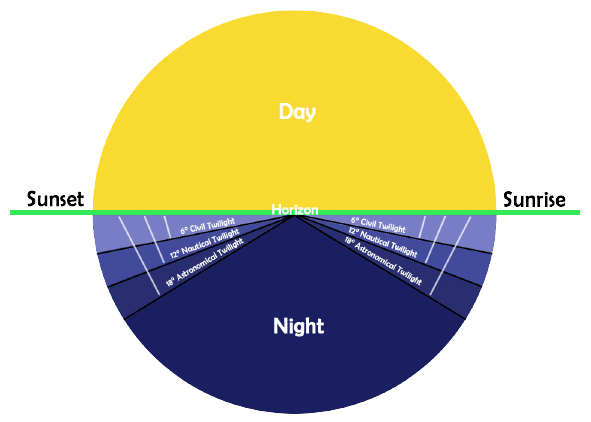

Horizon View
Home
Explaination:
This is an interface to help you find the specific times of different astrological events.
- Sunrise
- Sunset
- Noon
- Civil Twilights
- Nautical Twilights
- Astronomical Twilights
